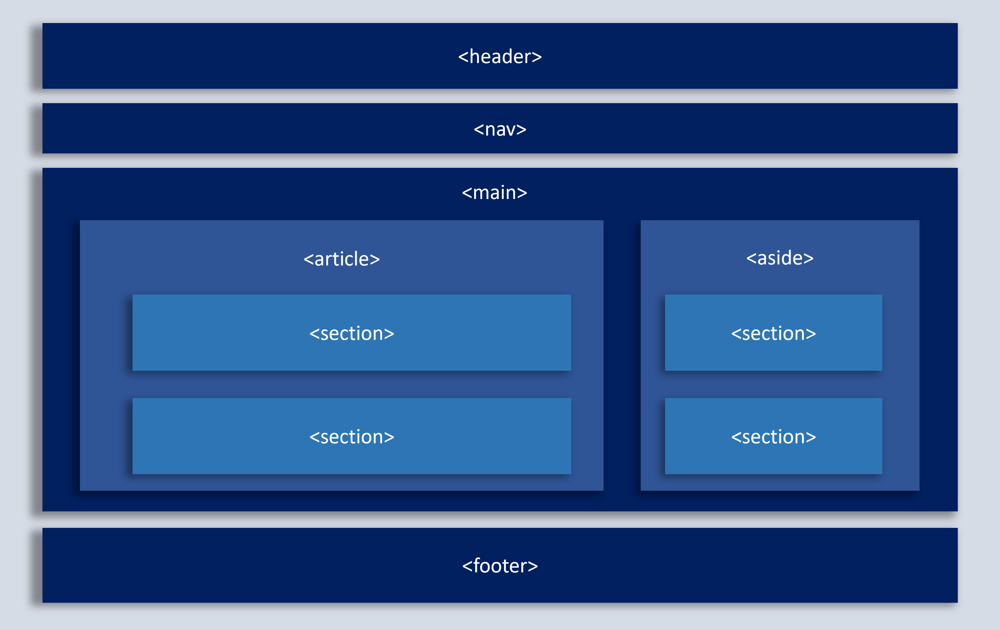
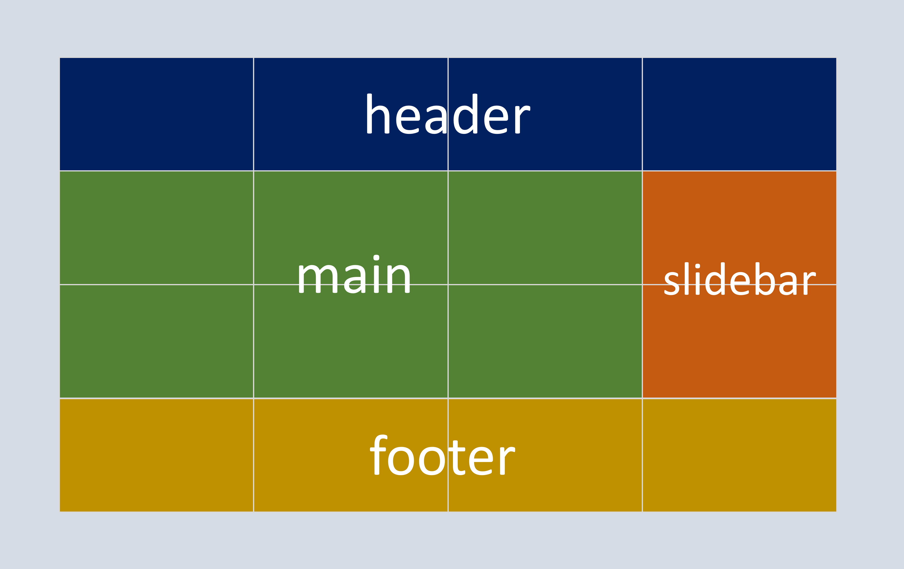

Este sitio esta diseñado para el impulsar el aprendizaje a Html y CSS orientado a los
conceptos basicos a Etiquetas semanticas y CSS Grid
Etiquetas semanticas

HTML5 incorpora nuevas etiquetas para estructurar páginas web. Estos elementos, denominados
generalmente elementos semánticos sirven para dividir un documento en partes lógicas,
indicando el tipo de contenido que se incluye en cada parte, representan por tanto secciones
lógicas o componentes de una aplicación web o un documento.
Campo, C. J. (2014). HTML5 para periodistas: Manual de uso práctico. Estrategia del Contenido. http://www.esvial.org/wp-content/files/Atica2012_pp120-129.pdf
Flores Huacho, N. J. (2021). HTML5. Introducción. DOCTYPE. CANVAS. Tipos de CANVAS. AUDIO. VIDEO. Elementos HTML semánticos. FORM. Tipos de FORM. WEB STORAGE. GEOLOCATION. Tipos de GEOLOCATION. DRAG AND DROP. Tipos de DRAG AND DROP, API FILE, tipos de API FILE. Aplicaciones. https://repositorio.une.edu.pe/bitstream/handle/20.500.14039/7193/MONOGRAFÍA%20-%20FLORES%20HUACHO%20NINI%20GILBER%20-%20FAC.pdf?sequence=1&isAllowed=y
Saucedo, F. S. (s. f.). Etiquetas semánticas - Guias de crecimiento IT. Recuperado 26 de septiembre de 2022, de https://saucedoinfo.github.io/guias/desarrollo/html/02-etiquetas_semanticas/#etiquetas-semanticas_1
CSS Grid

CSS Grid layout contiene funciones de diseño dirigidas a los desarrolladores de aplicaciones
web. El CSS grid se puede utilizar para lograr muchos diseños diferentes. También se destaca
por permitir dividir una página en áreas o regiones principales, por definir la relación en
términos de tamaño, posición y capas entre partes de un control construido a partir de
primitivas HTML.
CSS Grid Layout - CSS | MDN. (2021, 19 agosto). Recuperado 26 de septiembre de 2022, de https://developer.mozilla.org/es/docs/Web/CSS/CSS_Grid_Layout
Qué es CSS Grid Layout. (2020, 6 febrero). Desarrollo Web. Recuperado 27 de septiembre de 2022, de https://desarrolloweb.com/articulos/que-es-css-grid-layout.html
Jiménez, J. D. P. (2020, 17 abril). Qué es CSS Grid. OpenWebinars.net. Recuperado 27 de septiembre de 2022, de https://openwebinars.net/blog/que-es-css-grid/
 Diseño Mockup
Diseño Mockup